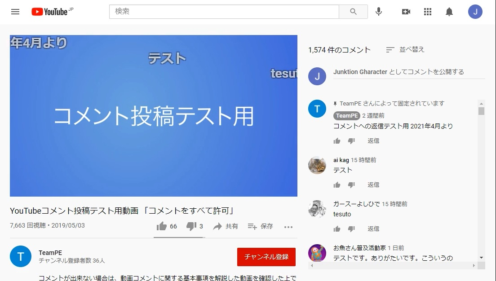

YouTubeComet
概要
YouTube の動画もニコニコみたいに流れるコメント表示をさせたい。
ググってみるとアドオンなどが出てくるが、どうもライブ動画にしか対応してない様子。
なので試しにブックマークレットを作った。

[ 動作イメージ ]
[ 動作イメージ ]
使い方
- ブラウザで適当なページをブックマークします
- そのブックマークを編集します（右クリックメニューなど）
- ブックマーク名は適当に変更し、「URL」の欄を下記のソースに差し替えて保存します
- YouTube の適当な動画ページを開きます（上の画像のような状態にして下さい）
- 先ほど作ったブックマークを使います
- 画面が少し変わってコメントが流れたら成功！
※ PC での使い方です（スマホは試してません）
※ 現状、動画の右側にスペースがない状態（シアターモードなど）ではコメントが読み取れず動作しないことがあります
ソース
更新日
- 2022-05-09 広告スキップボタンを自動で押す
- 2021-12-07 仕様を少し記述，コメントが多い場合スクロールしないと続きが読み込まれない問題に対応
- 2021-04-27 このページを作成
- 2021-04-22 Twitter に投稿
書いた人
Ezp!
Gharacter Junktion というサイトでモバイルフラッシュを作って置いてました。(いまはもううごかない)
たまに Twitter でなにかしゃべる。